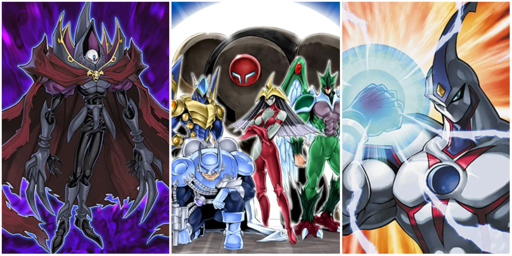

Jaden Yuki
Protagonista principal de Yu-Gi-Oh! GX.
La generación de la Academia de Duelo
Jaden Yuki es uno de los duelistas más talentosos de la Academia de Duelo y utiliza las famosas cartas HERO.
Protagonista principal de Yu-Gi-Oh! GX.

Las cartas HERO son el deck principal de Jaden.
Lugar donde entrenan los mejores duelistas.